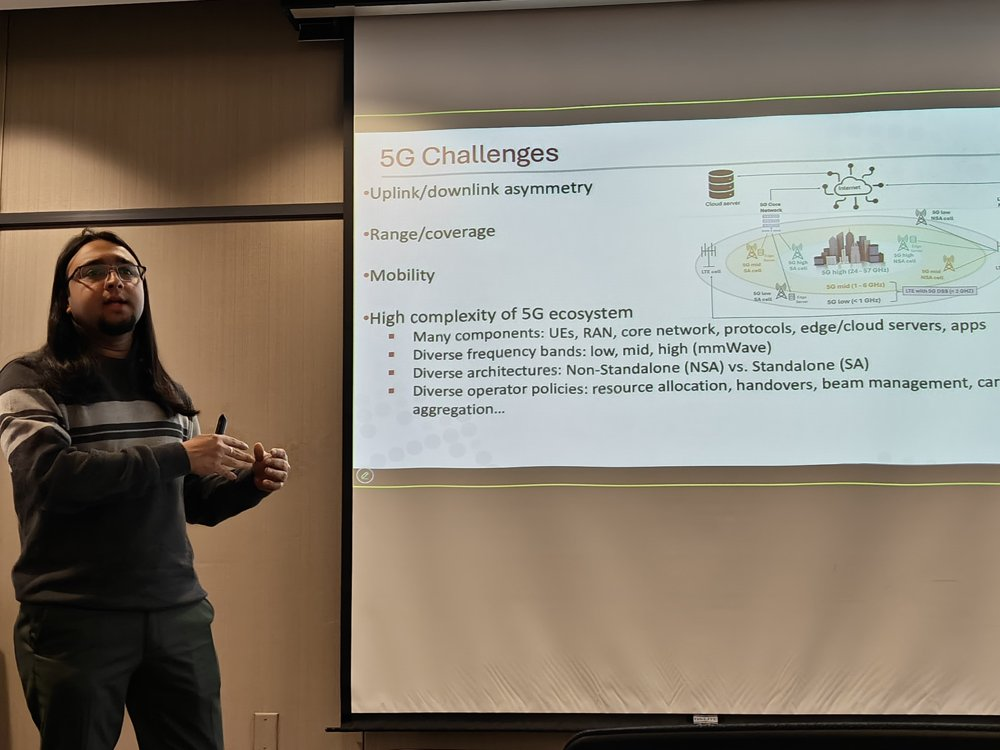

Talks
Invited Talks
-
Dissecting 5G in the Wild: Performance, Coverage, and Support for Next-Gen Applications
University of Edinburgh · Edinburgh, UK · July 2026 · Online
Technical University of Munich · Munich, Germany · May 2026
Columbia University · New York, NY, USA · May 2026
Virginia Tech · Blacksburg, VA, USA · April 2026
Rensselaer Polytechnic Institute (RPI) · Troy, NY, USA · March 2026
-
Replication: Performance of Cellular Networks on the Wheels
Hewlett Packard Labs · Milpitas, CA, USA · December 2026
-
A First Large-Scale Study of Operational 5G Standalone Networks
Hewlett Packard Labs · Milpitas, CA, USA · December 2026
-
Performance of Cellular Networks on the Wheels
New England Systems Day 2025 · Boston, MA, USA · February 2025
Juniper Networks · Sunnyvale, CA, USA · April 2024

Conference & Workshop Presentations
-
Dissecting 5G in the Wild: Performance, Coverage, and Support for Next-Gen Applications
ACM MobiSys 2025 Rising Stars Forum · Anaheim, CA, USA · June 2025
-
A First Look at 160 MHz WiFi 6/6E in Action: Performance and Interference Characterization
IFIP/IEEE NETWORKING 2024 · Thessaloniki, Greece · June 2024
-
Performance of Cellular Networks on the Wheels
ACM IMC 2023 · Montreal, Canada · October 2023
-
Can 5G mmWave Enable Edge-Assisted Real-Time Object Detection for Augmented Reality?
MASCOTS 2023 · Stony Brook, NY, USA · October 2023
-
Co-located Immersive Gaming: A Comparison between Augmented and Virtual Reality
IEEE Conference on Games (CoG 2022) · Beijing, China · August 2022 · Online
-
Demystifying Resource Allocation Policies in Operational 5G mmWave Networks
IEEE WoWMoM 2022 · Belfast, UK · June 2022
-
Can 5G mmWave Support Multi-User AR?
PAM 2022 · 2022 · Online
-
An In-Depth Study of Uplink Performance of 5G mmWave Networks
ACM SIGCOMM 5G-MeMU 2022 · Amsterdam, Netherlands · August 2022